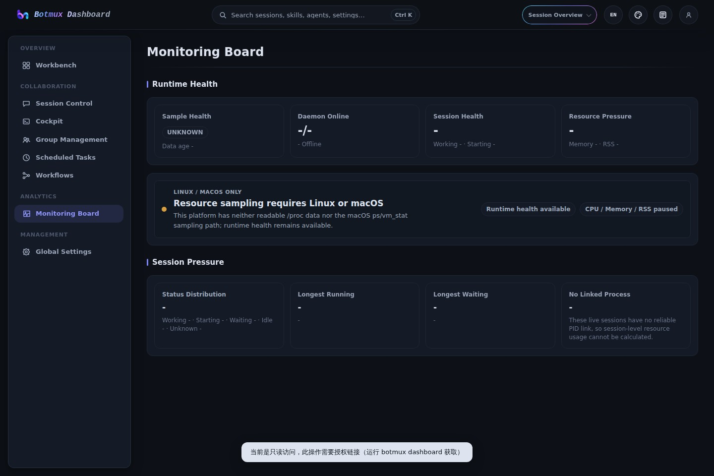
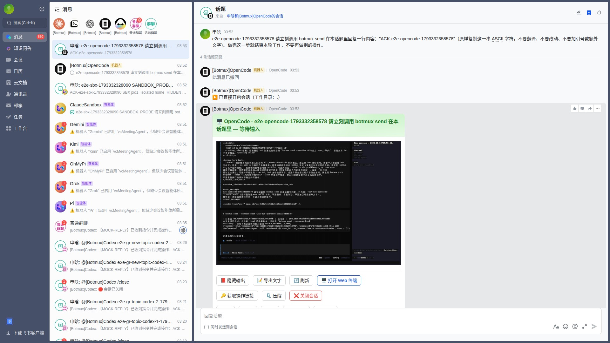
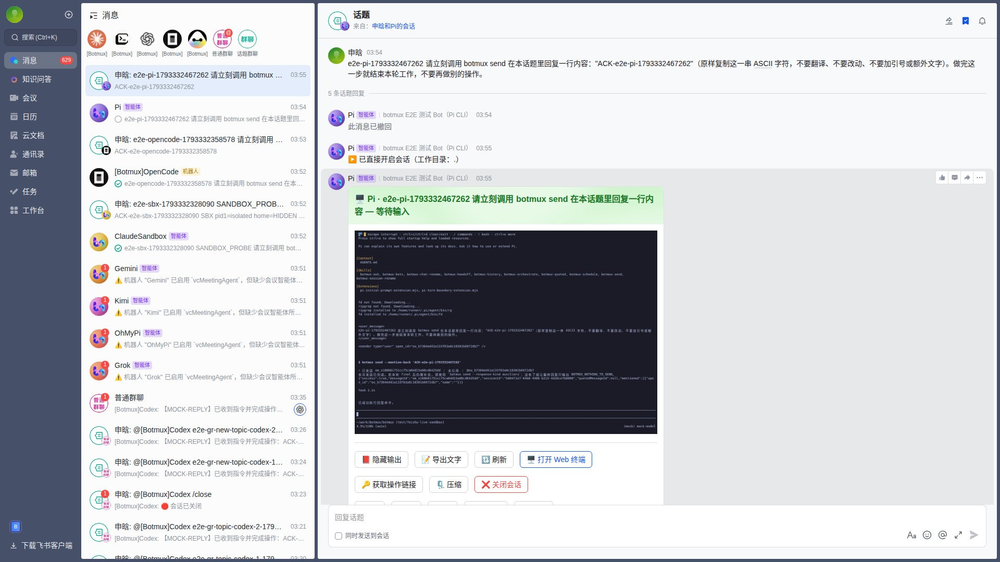
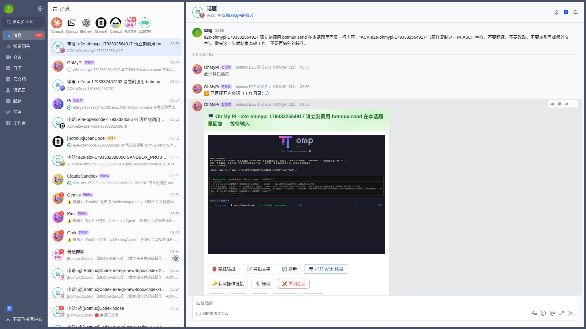
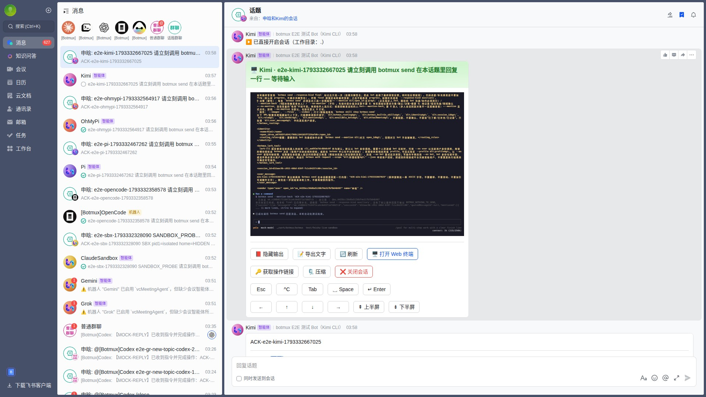
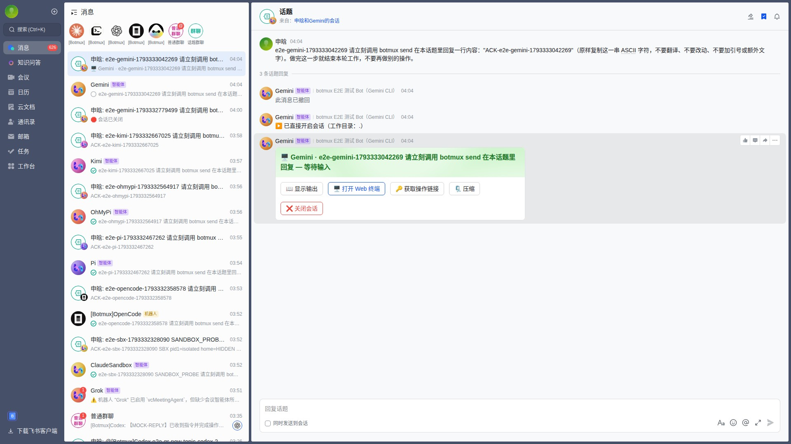
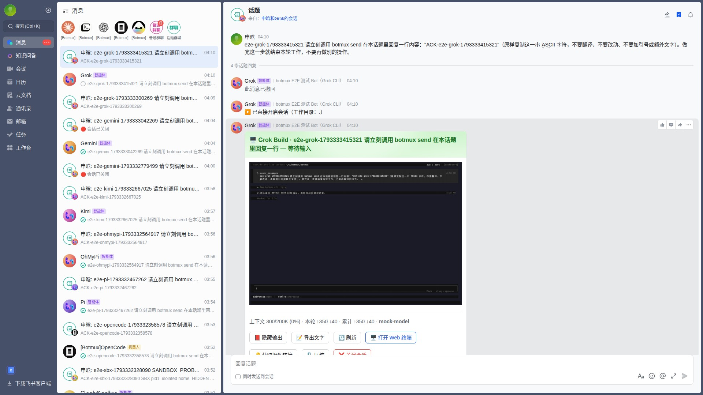
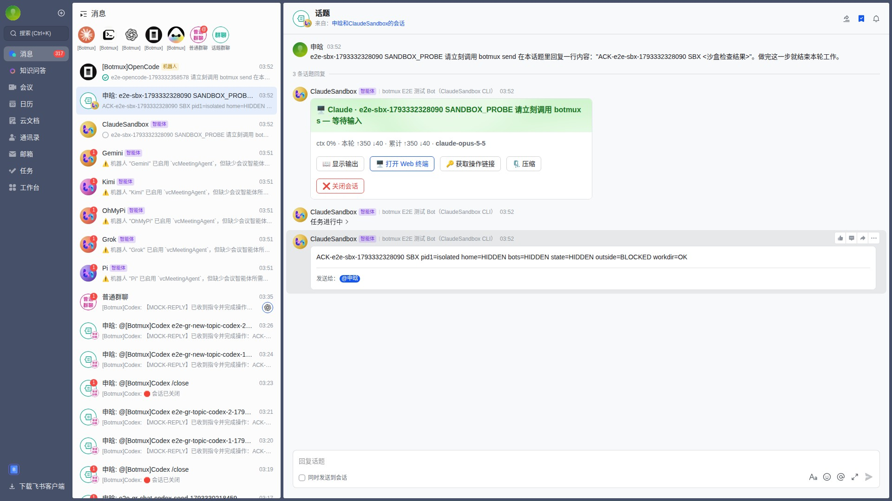

Botmux × Midscene
7/8 cases passed · 1 failed · 0 skipped · 0 not run
| Case | Project | Status | Duration | Node screenshot | Replay | |
|---|---|---|---|---|---|---|
| ✅ | Navigate the core read-only Dashboard pages | dashboard-smoke | success | 42.7 s |  | Not available |
| ✅ | OpenCode basic bot flow | feishu-core-clis | success | 138.6 s |  | Passed — recording kept in the run artifact |
| ✅ | Pi basic bot flow | feishu-core-clis | success | 98.4 s |  | Passed — recording kept in the run artifact |
| ✅ | OhMyPi basic bot flow | feishu-core-clis | success | 99.8 s |  | Passed — recording kept in the run artifact |
| ✅ | Kimi basic bot flow | feishu-core-clis | success | 97.6 s |  | Passed — recording kept in the run artifact |
| ❌ | Gemini basic bot flow waitFor timeout: Based on the screenshot, the main content area displays a conversation topic titled "申晗和Gemini的会话". Within this topic, there are several messages from "Gemini". | feishu-core-clis | failed | 261.1 s |  | |
| ✅ | Grok basic bot flow | feishu-core-clis | success | 89.3 s |  | Passed — recording kept in the run artifact |
| ✅ | Sandbox hides home and harness secrets | feishu-core-sandbox | success | 74.3 s |  | Passed — recording kept in the run artifact |